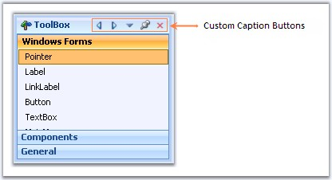
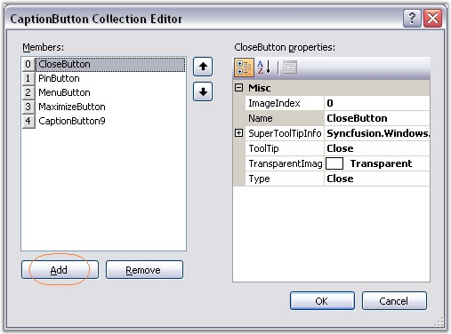
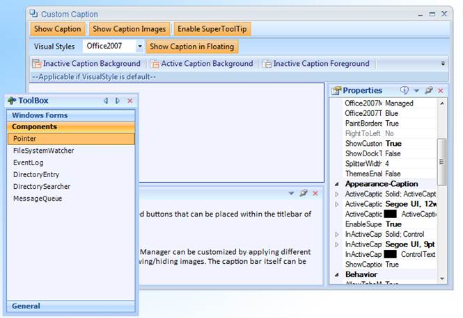

Custom Caption Collection Editor which can be accessed using DockingManager.CaptionButtons property, lets you customize the default buttons and also lets you add custom caption buttons.

Figure 60: Docked Control with Custom Caption Buttons
Adding and customizing caption Buttons
In the CaptionButton Collection Editor, click "Add" to add a new caption button. To customize the caption button, modify the properties provided to the right of the members in the editor.

Figure 61: CaptionButton Collection Editor
This can be done programmatically using the below code snippets.
|
[C#]
Syncfusion.Windows.Forms.Tools.CaptionButton captionButton = new Syncfusion.Windows.Forms.Tools.CaptionButton(); toolTipInfo = new Syncfusion.Windows.Forms.Tools.ToolTipInfo(); captionButton.ImageIndex = 4; captionButton.Name = "Custom Button"; captionButton.Type = Syncfusion.Windows.Forms.Tools.CaptionButtonType.Custom; captionButton.SuperToolTipInfo = toolTipInfo captionButton.TransparentImageColor = System.Drawing.Color.Transparent; this.dockingManager1.CaptionButtons.Add(captionButton); |
|
[VB.NET]
Dim captionButton5 As Syncfusion.Windows.Forms.Tools.CaptionButton = New Syncfusion.Windows.Forms.Tools.CaptionButton() toolTipInfo = new Syncfusion.Windows.Forms.Tools.ToolTipInfo() captionButton.ImageIndex = 4 captionButton.Name = "Custom Button" captionButton.Type = Syncfusion.Windows.Forms.Tools.CaptionButtonType.Custom; captionButton.SuperToolTipInfo = toolTipInfo captionButton.TransparentImageColor = System.Drawing.Color.Transparent Me.dockingManager1.CaptionButtons.Add(captionButton) |
A sample which demonstrates the addition of Custom Caption Buttons is available in the below sample installation path.
..My Documents\Syncfusion\EssentialStudio\Version Number\Windows\Tools.Windows\Samples\2.0\Docking Package\Custom Caption
Custom Button for Caption Bar in Floating Form
This feature enables you to add custom buttons to the caption bar when an item is in a floating state.
You can now add custom buttons to the caption bar when an item is in a floating state. It is not required to dock the item to use the custom buttons.
Table 11: Propertyes Table
|
Property |
Description |
Type |
Data Type |
Reference links |
|
ShowCustomButtonsInFloating |
Specifies whether caption button will be enabled while floating. |
- |
Boolean |
NA |
Enabling Custom Button for Caption Bar while Floating
To enable custom button for caption bar while floating, set the ShowCustomButtonsInFloating property to true. By default this is set to false.
|
[C#] this.dockingManager1.ShowCustomButtonsInFloating = true; |
|
[VB] me.dockingManager1.ShowCustomButtonsInFloating = True |

Figure 62: Caption Bar with Custom Button while Floating
Note: This feature is not applicable for VS2005 (default) visual style.
Sample Link
A sample for this feature is available in the following location:
..\..\AppData\Local\Syncfusion\EssentialStudio\9.4.0.59\Windows\Tools.Windows\Samples\2.0\Docking Package\Custom Caption